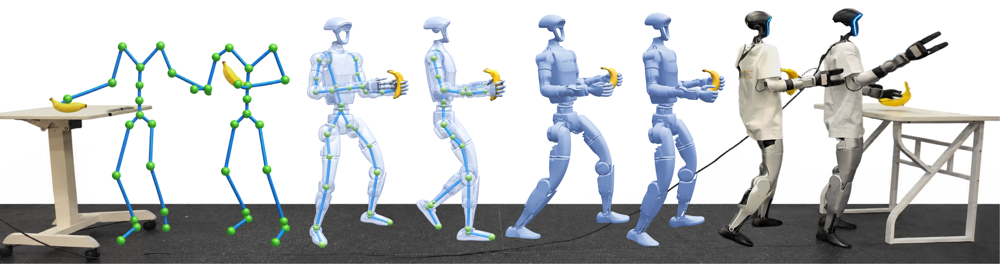
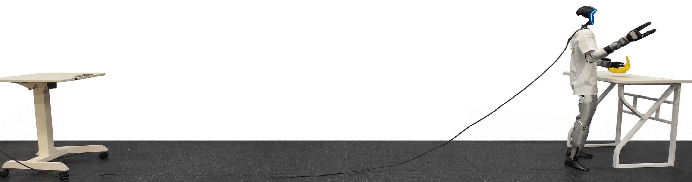
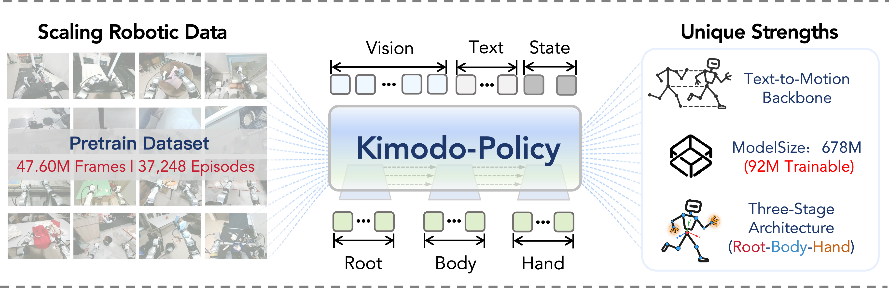
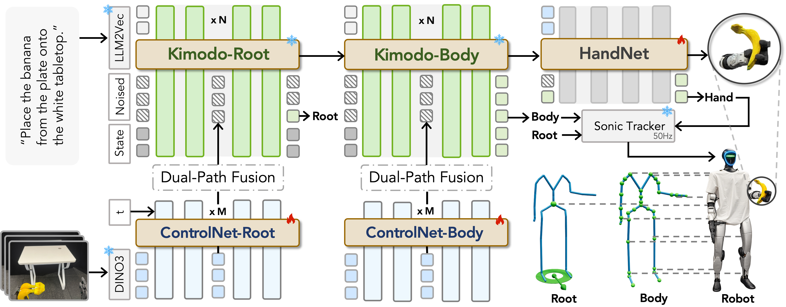
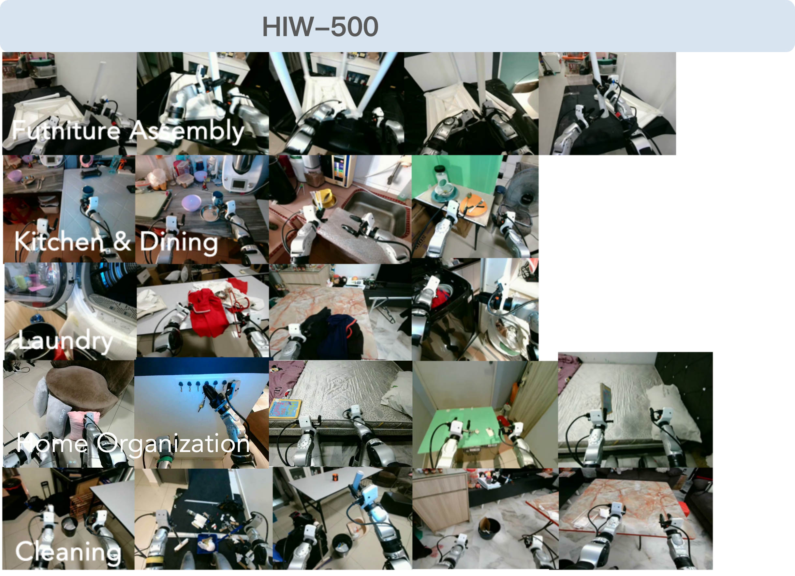
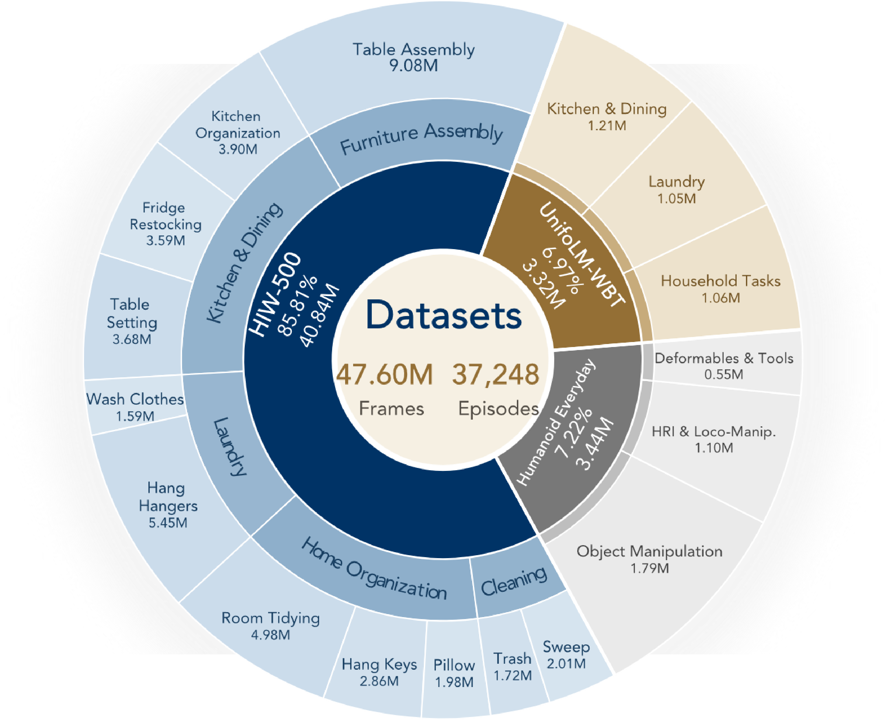
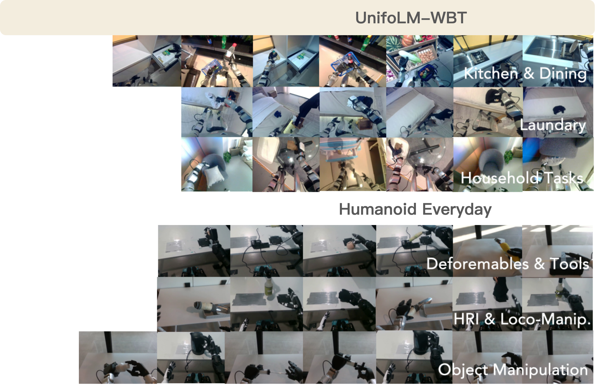
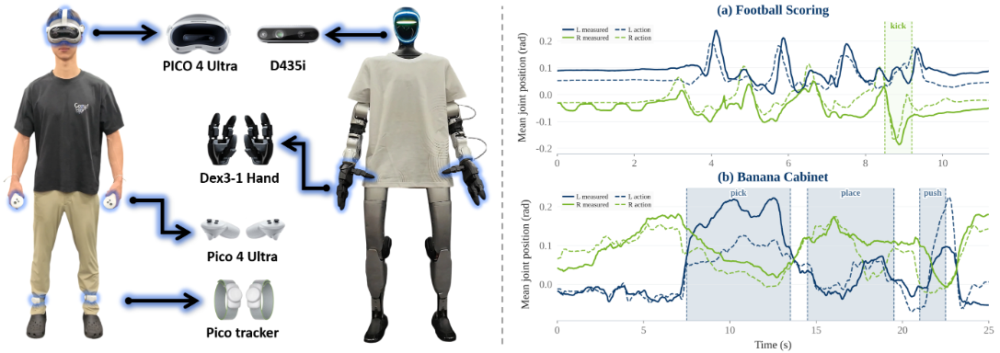

From motion generation to humanoid control



Kimodo-Policy turns pretrained text-to-motion generators into vision–language–action policies for humanoid robots. Given an egocentric image, a language instruction, and motion history, it predicts coordinated whole-body actions for closed-loop locomotion and manipulation.
The central idea is to build on motion knowledge that already exists. A pretrained motion generator supplies inter-joint coordination and temporal structure; visual adaptation grounds that knowledge in the current scene. A dedicated root–body–hand architecture connects navigation, articulated movement, and object interaction.
With 678M total parameters and 92M trainable parameters, the policy is evaluated on HumanoidArena, SIMPLE, and eight physical-robot tasks. These experiments span walking, posture changes, single- and dual-arm manipulation, and contact-rich interaction.
A structured motion prior, grounded in the scene

Kimodo-Policy preserves the pretrained Kimodo root and body denoisers and learns visual conditioning through ControlNet branches. LLM2Vec encodes the instruction, frozen DINOv3 extracts image features, and a separate HandNet predicts synchronized left- and right-hand controls.
Root → Body → Hand
The root stage predicts translation and heading. Its trajectory conditions articulated body motion; future body features, visual observations, and the current hand state then guide HandNet. Each stage has a dedicated prediction objective, while explicit forward conditioning preserves whole-body coordination.
Visual adaptation with Dual-Path Fusion
Motion-query cross-attention retrieves task-relevant image features, while a token-axis MLP maps spatial visual tokens to the future motion horizon. Zero-initialized projections inject these features into the frozen motion backbone, conditioning future predictions while leaving the observed history intact.
Predict, execute, observe, and replan
The policy treats each query as constrained motion completion. It predicts a 50-frame future at 30 Hz, executes a prefix, and replans from updated observations. Root and body predictions become references for the SONIC tracker, alongside hand commands. This closes the loop between motion generation and physical execution.
Performance
We evaluate Kimodo-Policy on HumanoidArena, Simple, and real-world tasks, measuring success across locomotion, manipulation, and coordinated whole-body interaction.
Success rate by task
0–100% · higher is betterSelect a legend label to show or hide a model.
Kimodo-Policy and reported baselines
Model&Datasets
Explore our open-source models and datasets on Hugging Face.
Kimodo-Policy models
Model checkpoints for Kimodo-Policy: from pretrained text-to-motion priors to visually grounded whole-body control.
Pretraining on diverse humanoid demonstrations
Our 419-hour VLA pretraining corpus combines HIW-500, 14 task-specific G1 subsets from UniFoLM-WBT, and Humanoid Everyday. We select the UniFoLM-WBT subsets available when the corpus was assembled, including main-camera-only variants where available. Together, these sources cover household manipulation, articulated-object interaction, and locomotion-integrated behaviors.



See coordinated whole-body behavior
Explore Kimodo-Policy in the real world, HumanoidArena, and Simple. These selected demonstrations show locomotion, whole-body coordination, and interaction across a range of tasks.
Whole-body teleoperation and data collection
Built on and extended from the NVIDIA Isaac-GR00T data-preparation pipeline, our setup uses a PICO 4 Ultra headset and hand controllers with PICO body trackers to capture whole-body and lower-limb motion. The robot carries an Intel RealSense D435i camera and Dex3-1 dexterous hands. We collect 25–30 demonstrations per task across eight real-world tasks and store them in a LeRobot v2.1-compatible format with Kimodo-specific motion and control fields.
